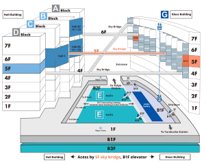

Digging into the Technical Papers (in Japanese)
『テクニカルペーパーを知る』

Talk Description:
SIGGRAPH Asia 2021で好評だったテクニカルペーパーの日本語解説イベント “Digging into the Technical Papers (in Japanese)”『テクニカルペーパーを知る』 を今年のSIGGRAPH Asia 2024でも開催します。国内のCGエキスパート8名がプレゼンターとなり、テクニカルペーパーの研究の背景や意義、そのインパクトについての解説を含んだオフラインならではのトークを予定しています。
Contributors:
- 藤堂 英樹, SIGGRAPH Asia 2024 ローカルコミッティー, 日本
- 五十嵐 悠紀, SIGGRAPH Asia 2024 ローカルコミッティー, 日本
Presenters:
- 岩崎 慶 (埼玉大学)
- 高山 健志 (サイバーエージェント)
- 岡部 誠 (静岡大学)
- 梅谷 信行 (東京大学)
- 安東 遼一 (株式会社ZOZO)
- シモセラ エドガー (早稲田大学)
- 楽 詠灝 (青山学院大学)
- 金森 由博 (筑波大学)
参加登録
当イベントへの参加を予定されている方は、以下のリンクよりSIGGRAPH Asia 2024の参加登録を行なってください。
登録カテゴリの全てでBirds of Featherへの参加が可能です。
| Programs & Events Included for Each Ticket Type |
Full Access Supporter |
Full Access |
Enhanced Access |
Exhibit & Experience Access |
|---|---|---|---|---|
| Birds of a Feather |  |
|
|
|
※ 主要なCG関連の団体や学会、購読誌においてSIGGRAPH Asia 2024参加登録の割引コードが配布されています。
割引コードをお持ちの方は、参加登録時にご活用ください。
公式参加登録ページ
(日本語)
会場:
- 開催日時: 12/3 (Tue)-12/6 (Fri)の連日 16:30-17:30 [Day1, 2, 3, 4]
- 場所:
- [Day1, 2] G502 (G Block, Level 5)
- [Day3, 4] G510 (G Block, Level 5)
※ 前半[Day1, 2]と後半[Day3, 4]で会場が異なりますのでご注意ください。
※ 会場のみでの実施になります。オンライン配信は行いません。

Hall B, Hall C から G Block へは 5Fの Sky Bridge (連絡通路)をご利用ください．
Hall E (B1F) からはエレベータも利用可能です．
Hall E (B1F) からはエレベータも利用可能です．
プログラム:
- 1日2名の講演を4日間開催します
- 1名あたりの講演時間: 30分 (発表 25分、Q&A 5分を目安)
| 会場 | 日付 | 時間 | 講演 |
|---|---|---|---|
| G502 | [Day1] 12/3 (Tue) | 16:30 - 17:00 | 梅谷 信行 (東京大学)
|
| 17:00 - 17:30 | 金森 由博 (筑波大学)
|
||
| [Day2] 12/4 (Wed) | 16:30 - 17:00 | 高山 健志 (サイバーエージェント)
|
|
| 17:00 - 17:30 | 岡部 誠 (静岡大学)
|
||
| G510 | [Day3] 12/5 (Thu) | 16:30 - 17:00 | 楽 詠灝 (青山学院大学)
|
| 17:00 - 17:30 | 安東 遼一 (株式会社ZOZO)
|
||
| [Day4] 12/6 (Fri) | 16:30 - 17:00 | 岩崎 慶 (埼玉大学)
|
|
| 17:00 - 17:30 | シモセラ エドガー (早稲田大学)
|